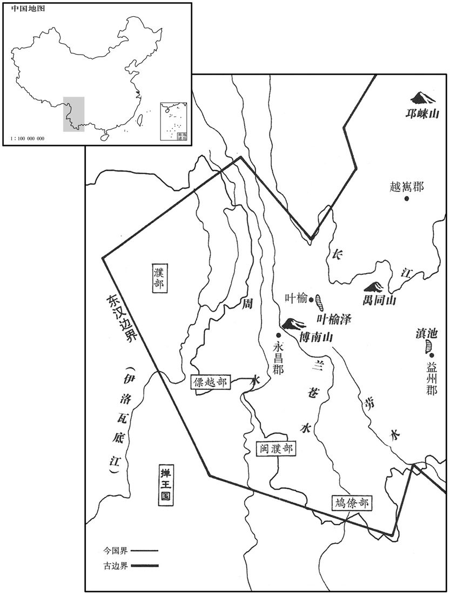
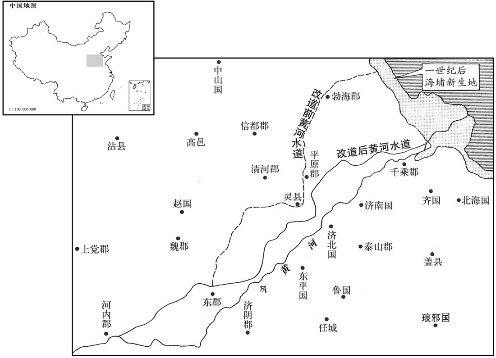

公元69年资治通鉴：本年记事、原文与白话对照
按原书编年位置阅读；追叙和史论不等于本年发生的事件。白话采用所据译本，缺译不以生成译文补齐。
卷45 · 本年记事
公元69年 · 汉显宗孝明皇帝永平十二年
十二年〔（己已、六九）〕
本年事件索引（现代整理）

本年形势与背景参考图

本年形势与背景参考图
春，哀牢王柳貌率其民五万余户内附，以其地置哀牢、博南二县。〔哀牢夷者，九隆种也，居牢山，绝域荒外，山川阻深，未尝通中国，西南去雒阳七千里。贤曰：在今匡州匡州县西。张柬之曰：姚州，哀牢国地。〕始通博南山，度兰仓水，〔华阳国志曰：博南县西山高三十里，越之，得兰仓水，有金沙，洗取融为金。〕行者苦之，歌曰：「汉德广，开不宾；度兰仓，为他人。」〔为，于伪翻。〕
春季，哀牢王柳貌率领属民五万余户旧附汉朝。朝廷在原地设立哀牢、博南两县，并开始进行开辟博南山通道和渡越兰仓水的工程。服役者因工程艰苦，作歌道：“汉德广大，开辟荒蛮，渡越兰仓，全为他人。”
初，平帝时，河、汴决坏，久而不修。建武十年，光武欲修之；浚仪令俊上言，民新被兵革，未宜兴役，乃止。〔浚仪县，属陈留郡。被，皮义翻。〕其后汴渠东侵，日月弥广，兖、豫百姓怨叹，以为县官恒兴他役，不先民急。会有荐乐浪王景能治水者，〔乐浪，在雒阳东北五千里。恒，户登翻。先，悉荐翻。乐浪，音洛琅。〕夏，四月，诏发卒数十万，遣景与将作谒者王吴修汴渠堤，自荥阳东至千乘海口千余里，〔谒者，属光禄勋。王吴以谒者而将作，故谓之将作谒者。贤曰：汴渠，即莨荡渠也。汴自荥阳首受河，所谓石门，在荥阳山北一里，过汴以东，积石为堤，亦号金堤，成帝阳嘉中所作也。〕十里立一水门，令更相洄注，〔尔雅曰：逆流而上曰洄。郭璞注云：旋流也。更，工衡翻。〕无复溃漏之患。〔复，扶又翻。〕景虽简省役费，然犹以百亿计焉。〔十万曰亿。〕
最初，在西汉平帝时，黄河、汴水曾经决口，久不修复。到了建武十年，当光武帝打算动工治理时，浚仪县令乐俊上书说：“人民新近经历了战争，不宜征发徭役。”于是将此事作罢。后来汴渠向东泛滥，区域日益扩展。兖州、豫州的百姓哀怨叹息，认为朝廷总在办其它工程，而不优先解救人民急难。恰好有人向朝廷举荐乐浪人王景，说他有治水才能。本年夏季，四月，明帝下诏征发役夫数十万人，派王景和将作谒者王吴修筑汴渠堤岸。从荥阳向东，直到千乘的入海口，共一千余里，每隔十里修建一个水闸，使水闸之间的水流相互调节，不再有决堤和漏水的忧患。王景虽然节省工程费用，然而仍消耗了数以百亿计的钱财。
秋，七月，乙亥，司空伏恭罢；乙未，以大司农牟融为司空。〔风俗通：牟子国，祝融之后，后因氏焉。〕
秋季，七月乙亥（二十四日），将司空伏恭免职。七月乙未（疑误），将大司农牟融任命为司空。
译本中未与胡注本可靠对应的内容
以下另列供核对版本差异，不并入胡注本正文。
译本所附古文
[4]是时，天下安平，人无徭役，岁比登稔，百姓殷富，粟斛三十，牛羊被野。
译本白话
此时，天下太平，无人服事徭役，粮食连年丰收，百姓殷实富裕，谷价每斛三十钱，牛羊遍野。